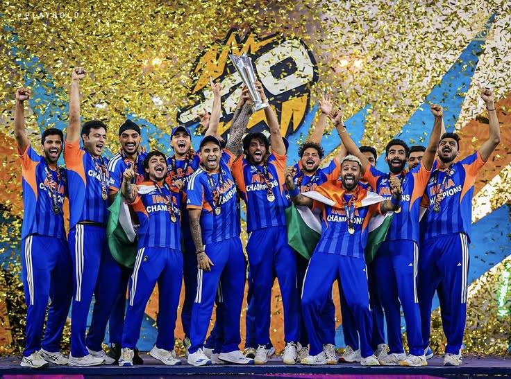

India delivered an impressive performance and secured the championship after a closely contested match... India won the ICC Champions Trophy 2025 Final in Dubai, beating New Zealand by four wickets. They made 254/6, with KL Rahul and Ravindra Jadeja seeing the innings home with one over to spare, after New Zealand had earlier made 251/7. The match was in the balance for a good proportion of the India innings as the Black Caps took a series of quick wickets. The openers Rohit Sharma and Shubman Gill put together a great first-wicket stand of 105, making the result look a foregone conclusion, but once again it was Glenn Phillips who produced something special. He took a tremendous catch, leaping to his right to remove Gill for 31, from the bowling of Mitchell Santner.
Michael Bracewell trapped new batter Virat Kohli lbw four balls later for just 1. And Rachin Ravindra brought Rohit's impressive day to an end, luring him down the track to be stumped by Tom Latham for 76. Ravindra took another good catch to remove Shreyas Iyer on 48, with Axar Patel following three overs later, caught by Will O'Rourke off Michael Bracewell. Hardik Pandya made a breezy run-a-ball cameo for 18, caught and bowled by Kyle Jamieson in the 48th over. So it was left to Rahul and Jadeja to steer it home.
The Black Caps - already without the injured Matt Henry, the tournament's leading wicket-taker - were missing Kane Williamson in the field, who sustained a quad injury while batting. Earlier, India put a stranglehold on New Zealand as their spinners took control in the middle of the game with Varun Chakaravarthy and Kuldeep Yadav both taking two wickets. They managed to restrict New Zealand to a run-rate of 3.30 in overs 11 to 30. But a late resurgence saw the Black Caps put on 50 runs in the last five overs to boost their score.
